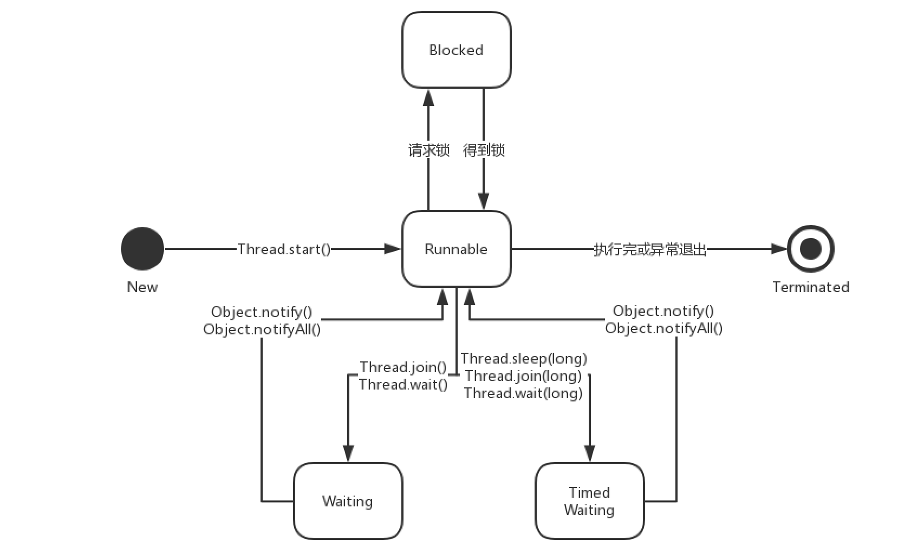
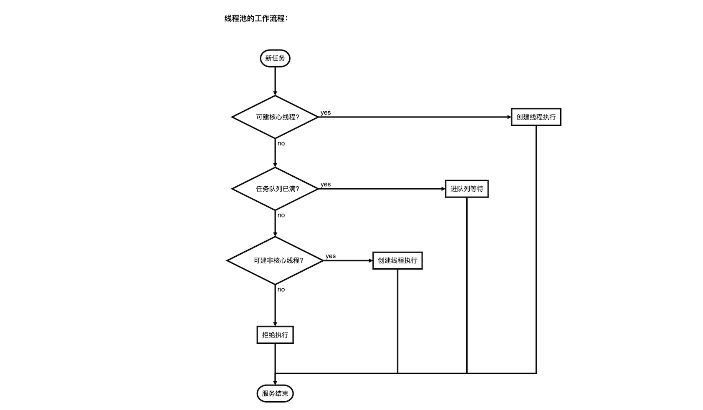

5. 多线程
- 进程是OS进行资源分配和调度的单位，线程是CPU调度和分派的单位；
- 线程从属于进程且和进程中其他线程共享进程资源，线程上下文切换比进程更快；
- 跨进程通信需要IPC通道，多线程间通过共享内存高效通信(进程内存、打开的文件描述符、进程当前目录、用户ID和进程组ID,在线程间是共享的)。
5.1 线程和池
JVM进程启动后，会启动一个MAIN线程和GC守护线程。
线程状态
- 创建
New: 尚未执行start()方法 - 就绪
Runnable: 等待OS调度运行 - 阻塞
Blocked: 等待获取到资源 - 等待
Waiting: 主动放弃CPU(休眠,礼让,等待条件)等待被唤醒thread#join();放弃锁进入Waiting,直到thread跑完才进入Runnablelock#wait();放弃锁进入Waiting,直到获取到lock的条件才进入RunnableThread::sleep();保持锁进入Waiting,超时后转Runnable等调度Thread::yield();保持锁进入Runnable,等待调度(只礼让高优先级)
- 终止
Terminated: 线程自然终止或异常死亡

线程中断
thread.interrupt();: 将中断标记true(若正在sleep()/wait()等中断方法时,用异常打断)thread.isInterrupted();: 返回中断标记,无副作用;Thread::interrupted();: 返回中断标记,并把中断标记复位为false;
Runnable runTask = new Runnable(){
public void run(){
// 检查中断标记
while(!Thread.currentThread().isInterrupted()){
try {
Thread.sleep(2000);
} catch (InterruptedException e) {
// 外部调interrupt()抛异常中断本线程,中断标记需手动置为true
Thread.currentThread().interrupt();
}
}
}
}
线程访问变量
- 可见性：A线程的缓存对B线程不可见。
- 原子性：JVM只保证基本数据类型的读取和赋值是原子操作。
- 有序性：指令重排(
.class/汇编/CPU指令)遵循happens-before规则，同as-if-serial语义，即线程的执行结果和排序前一致，即有数据依赖关系的指令不会被重排。
// final 保证final的变量在读取前其赋值操作已经完成。
// volatile 确保volatile写操作前后有屏障，并刷新主存、标记各线程缓存失效。
// synchronized 确保在获取和释放锁的时候都有内存屏障，且刷新主存并标记缓存失效。
// 原子类型 基于`UnSafe`类直接操作内存，禁止该指令与前后的指令重排序，并刷新主存并标记缓存失效。
// ThreadLocal变量在线程中是独立的，不同线程互不干扰;
ThreadLocal<SimpleDateFormat> format = ThreadLocal
.withInitial(()->new SimpleDateFormat("yyyy-MM-dd"));
// 第一次使用会初始化并保存在ThreadLocalMap中, 之后使用本线程不再初始化直到线程被销毁
format.get();
注: Key是虚引用ThreadLocal,该对象销毁后JVM会在get()/set()/remove()时清理Key.get()==null的Entry(即使这样仍然可能内存泄露);
线程优先级
- 优先级：
Thread#setPriority(Thread.NORMAL_PRIORITY)此优先级在Linux下无效- 在
start()前设置[10,1],值越大优先级越高; - 默认父线程优先级,见
Thread#init(); Thread.yield()只会礼让优先级相同或更高的线程;
- 在
- 守护线程：
Thread#isDaemon();Thread#setDaemon(boolean)：- 后台通用服务,并非不可或缺(例如:GC)
- 若进程只剩守护线程会被杀死,所以守护线程中读写文件容易损坏数据。
线程池
通过对象池复用方案来解决：频繁地线程创建、销毁带来的不必要损耗；控制对象数量以抑制内存上涨。
ThreadPoolExecutor(
// 核心线程数,核心线程一直存活(即使空闲,除非allowCoreThreadTimeout(true))
corePoolSize,
// 最大线程数
maximumPoolSize,
// 非核心线程闲置时长,超时线程会被回收
keepAliveTime,
// 时间单位,可用TimeUnit.MILLISECONDS
timeUnit,
// 任务队列,BlockingQueue<Runnable>
workQueue,
// 线程创建工厂
threadFactory,
// 任务拒绝处理器, 默认ThreadPoolExecutor.AbortPolicy抛异常;
rejectedExecutionHandler);

内置的线程池
FixedThreadPool：适用请求频繁,数量基本固定的任务(固定核心线程数无超时关闭，无非核心线程，无限任务队列持续等待)CachedThreadPool：适用数量庞大,耗时较少的任务(无核心线程，无限非核心线程(MAX_INT)超时60s关闭，空任务队列立即执行)SingleThreadPool：单线程模型用于避免并发时数据不同步问题(单核心线程，无非核心线程，无限任务队列持续等待)ScheduledThreadPool：适用于定时或周期性任务(核心线程数固定无超时关闭，无限非核心线程(MAX_INT)空闲即回收，空任务队列立即执行)Timer：基于系统绝对时间，单线程实现，某个任务执行(时长，异常)会影响其他任务调度。ScheduledThreadPoolExecutor：基于相对时间，多线程实现，某个任务执行(时长，异常)不影响其他任务。
ScheduledExecutorService service = new ScheduledThreadPoolExecutor(5);
// 周期执行,下次执行时间 = 本次任务开始时间 + 周期长
service.scheduleAtFixedRate(exeRun,0,1000,TimeUnit.MILLISECONDS);
// 周期执行,下次执行时间 = 本次任务结束时间 + 周期长
service.scheduleWithFixedDelay(exeRun,0,1000, TimeUnit.MILLISECONDS);
5.2 锁和AQS
synchronized锁住的是对象(对象头中包含锁状态), 只有一个竞争条件(wait()/notify()方法依赖JVM中Native层管程Monitor对象)。
- 可重入：内层方法默认具有外层方法的获得的锁(锁设计为按线程区分而非方法)。
- 非公平：OS为保证吞吐量，获得锁的顺序不一定同申请顺序(对象锁是非公平锁，AQS则可指定公平)。
- 读写锁：读读共享，读写互斥。
- 分段锁：
ConcurrentHashMap在JDK7-对每个段加锁(DK8+对每个Entry加锁)以减少冲突提高吞吐。
AbstractQueuedSynchronizer
ReentrantLock基于AQS实现独占锁，可构建公平或非公平锁。CountDownLatch基于AQS逆用共享锁机制，实现异步闩。
/** ReentrantLock **/
ReentrantLock lock = new ReentrantLock();
Condition condition = lock.newCondition();
// 用tryLock()代替lock.lock()发生死锁时可超时终止
// lock.lockInterruptibly()无休止尝试直到被interrupt();
if (lock.tryLock(3000, TimeUnit.MILLISECONDS)) {
try {
if (不满足业务条件) {
condition.await();
// 等待被唤醒: condition.signalAll();
}
// 获取锁成功, do ...
} finally {
lock.unlock();
}
} else { //
// 获取锁超时, do ...
}
/** CountDownLatch **/
// 初始化,指定开闩任务数
CountDownLatch latch = new CountDownLatch(4);
// 指派子任务完毕,关闩; 线程阻塞于此
latch.await();
// 子任务执行完毕,通知开闩
latch.countDown();
5.3 J.U.C库
由于同步锁性能消耗大，而volatile只能保证可见性而无法保证原子性；现代CPU提供了硬件级指令实现同步原语(java.util.concurrent.*基于CAS性能更好)：
// 如Intel: cmpxchg，以下假设当前内存值为V，预期值为A，待设置值为B
// 其逻辑形如
while(true){
if (isOtherWriting) continue; // 检测到其他线程在写值，自旋(而非阻塞)
if (V == A) { // CPU保证在 [V==A之后, 设置V=B前]不会有其他线程修改V值
isOtherWriting = true
setV(B);
isOtherWriting = false
}
// 预期值不符，设置失败
break;
}
原子类AtomicXxx
通过CAS解决变量因多线程并发读写导致的数据异常
AtomicReference<String> ref = new AtomicReference<>("A");
ref.compareAndSet("A", "B");
竞争分量XxxAccumulator
CAS在大量线程竞争时会不停自旋导致消耗过大，竞争分量通过分段的思想，将不同线程更新不同的段，最后再将各段合并进而提高效率。
// Adder: LongAdder, DoubleAdder
// Accumulator: LongAccumulator, DoubleAccumulator
// 初始化
LongAdder adder = new LongAdder();
// 子线程基于分量计算在单线程模型上保证原子性)
adder.add(x); // adder.increment();
// 计算完毕后合并分量取结果
adder.sum();
版本引用AtomicXxxReference
CAS会存在ABA问题，通过为对象引用设置版本号来解决将先后两个A错误地认为是同一个对象问题。
// AtomicMarkableReference 使用Boolean值做"版本号"
AtomicStampedReference<String> ref = new AtomicStampedReference<>("A", 0);
ref.compareAndSet("A", "B", ref.getStamp(), ref.getStamp() + 1);
ref.compareAndSet("B", "A", ref.getStamp(), ref.getStamp() + 1);
线程安全集合
- 用集合对象做锁集合:
Collections.synchronizedCollection/synchronizedMap();、Vector<E>、Statck<E>、Hashtable<K,V>、StringBuffer - 性能更好的集合:
CopyOnWriteArraySet/CopyOnWriteArrayList: 写入之前先拷贝一份出来给读使用ConcurrentHashMap: 用更细粒度的锁减少冲突
J.U.C阻塞队列
阻塞队列在队列的基础上支持两个附加操作：
- 队列为空时，取元素的线程会等待，直到队列非空
- 队列已满时，加元素的线程会等待，直到队列可添加元素
/** 抛出异常 **/
boolean add(e);
E remove();
E element();
/** 返回特殊值(非阻塞) **/
boolean offer(e); // 入队失败返回false;
E poll(); // 出队失败返回null
E peek(); // 检查失败返回null
/** 超时退出(非持续阻塞) **/
boolean offer(e, time, unit);
E poll(time, unit);
/** 持续阻塞 **/
put(e); // 队满时等待条件
E take(); // 队空时等待条件
阻塞队列成员
ArrayBlockingQueue: 有界/数组; 默认非公平锁LinkedBlockingQueue: 可选有界/链表; 读写分锁PriorityBlockingQueue: 无界/堆; 优先级队列DelayQueue: 无界/堆; 元素超时才可取出，可用于缓存系统、定时任务ScheduledThreadPoolSynchronousQueue: 有界/无; 默认非公平锁, 每个put都须等一个take, 应用：CachedThreadPoolLinkedBlockingDeque: 无界/链表; 支持双向读写(但锁是同一个)LinkedTransferQueue: 无界/链表; 在阻塞队列基础上多了transfer(e)/tryTransfer(e)方法
LinkedTransferQueue<String> queue = new LinkedTransferQueue<>();
// 若有消费线程等待立即传递，否则元素插入队尾阻塞生产线程直到被取走
queue.transfer("");
// 若有消费线程等待立即传递，否则返回false元素不进队列
queue.tryTransfer("");
// 若有消费线程等待立即传递，否则元素进队尾阻塞若干时长，若期间被取走返回true否则超时时返回false
queue.tryTransfer("", 1000, TimeUnit.MILLISECONDS);
FutureTask
FutureTask可将Callable转换成Runnable交给线程执行，并可通过Future接口获取执行结果。
FutureTask task = new FutureTask<>(callable);
new Thread(task).start();
result = task.get(); // 阻塞当前线程